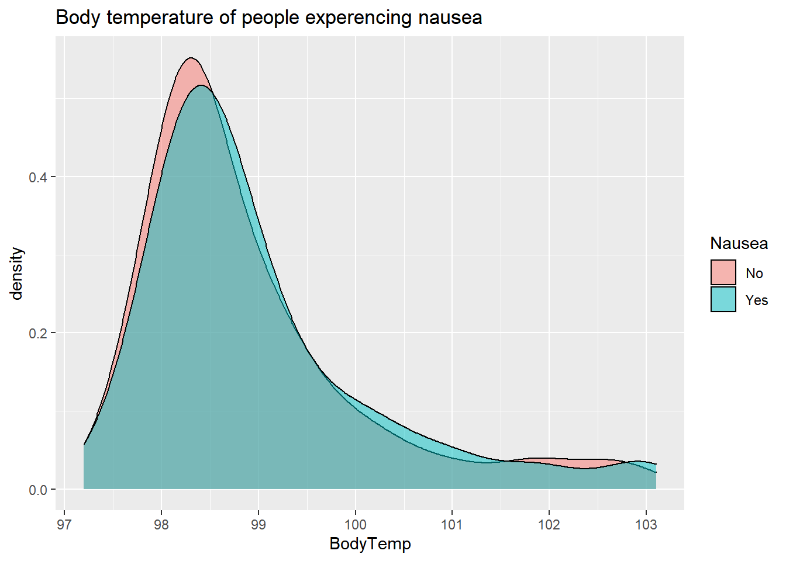
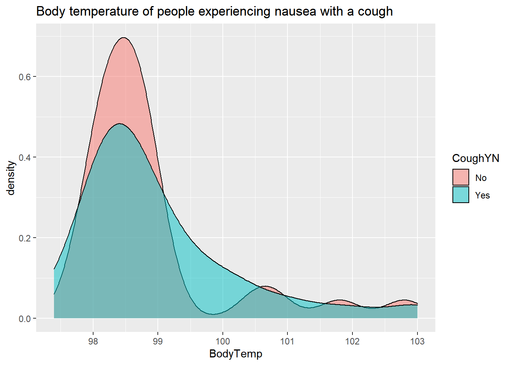
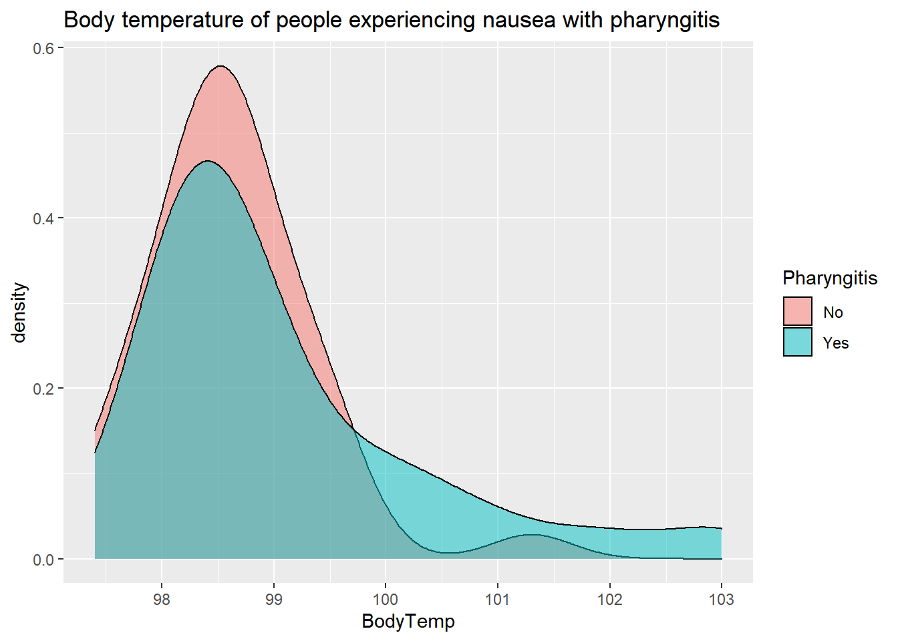
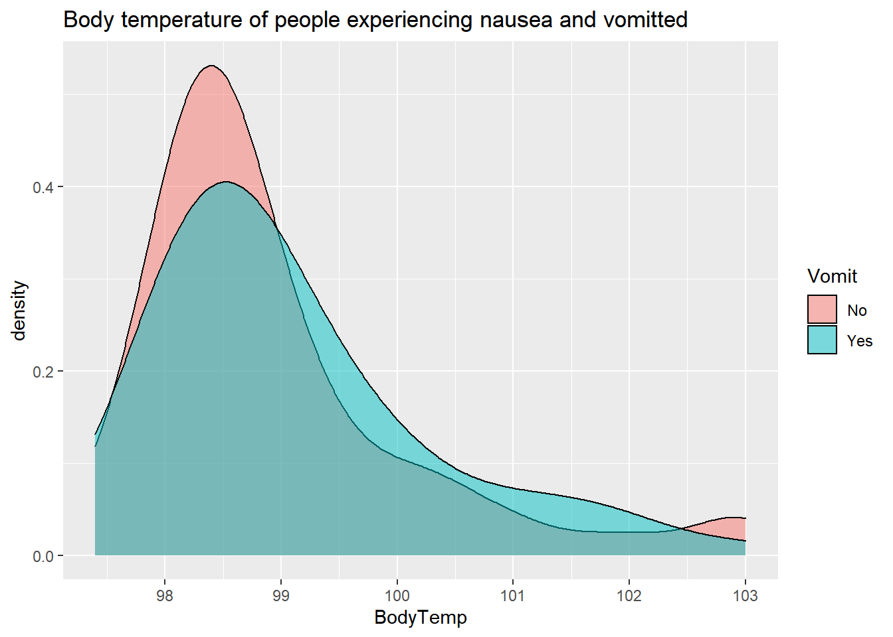
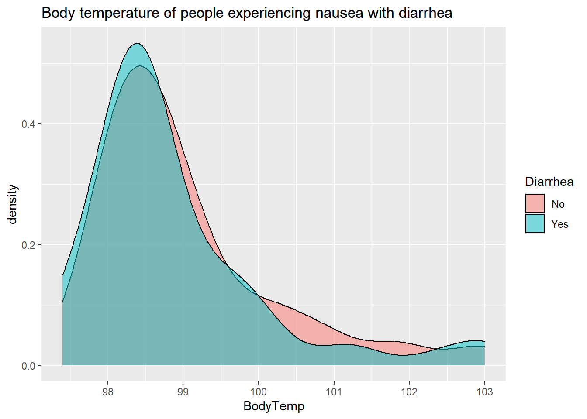
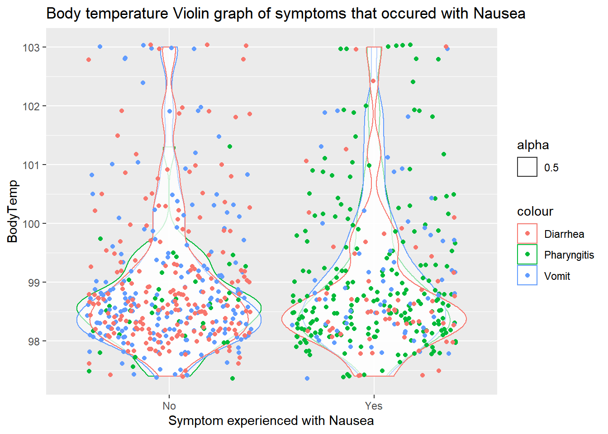
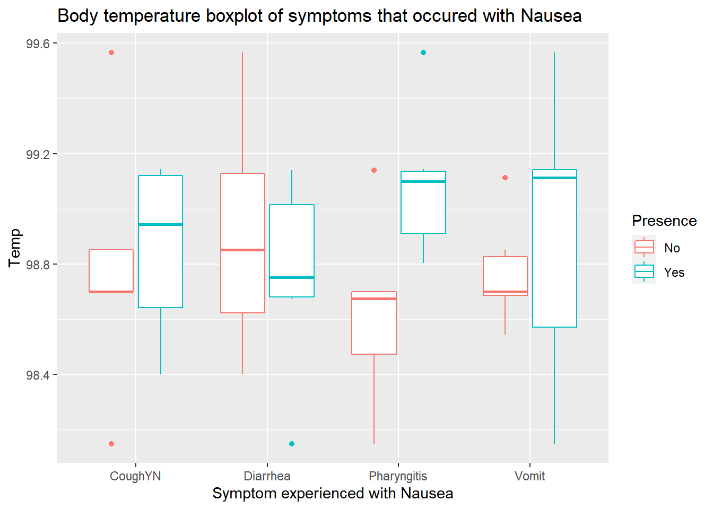

The following excerpt are the processing and data exploration steps completed for the Influenza Analysis.
#load needed packages. make sure they are installed.
library(readxl) #for loading Excel files
library(dplyr) #for data processing
library(here) #to set paths#path to data
data_location <- here::here("data","raw_data","SympAct_Any_Pos.Rds")
#load data.
rawdata <- readRDS(data_location)
#take a look at the data
dplyr::glimpse(rawdata)## Rows: 735
## Columns: 63
## $ DxName1 <fct> "Influenza like illness - Clinical Dx", "Acute tonsi~
## $ DxName2 <fct> NA, "Influenza like illness - Clinical Dx", "Acute p~
## $ DxName3 <fct> NA, NA, NA, NA, NA, NA, NA, NA, "Fever, unspecified"~
## $ DxName4 <fct> NA, NA, NA, NA, NA, NA, NA, NA, "Other fatigue", NA,~
## $ DxName5 <fct> NA, NA, NA, NA, NA, NA, NA, NA, "Headache", NA, NA, ~
## $ Unique.Visit <chr> "340_17632125", "340_17794836", "342_17737773", "342~
## $ ActivityLevel <int> 10, 6, 2, 2, 5, 3, 4, 0, 0, 5, 9, 1, 3, 6, 5, 2, 2, ~
## $ ActivityLevelF <fct> 10, 6, 2, 2, 5, 3, 4, 0, 0, 5, 9, 1, 3, 6, 5, 2, 2, ~
## $ SwollenLymphNodes <fct> Yes, Yes, Yes, Yes, Yes, No, No, No, Yes, No, Yes, Y~
## $ ChestCongestion <fct> No, Yes, Yes, Yes, No, No, No, Yes, Yes, Yes, Yes, Y~
## $ ChillsSweats <fct> No, No, Yes, Yes, Yes, Yes, Yes, Yes, Yes, No, Yes, ~
## $ NasalCongestion <fct> No, Yes, Yes, Yes, No, No, No, Yes, Yes, Yes, Yes, Y~
## $ CoughYN <fct> Yes, Yes, No, Yes, No, Yes, Yes, Yes, Yes, Yes, No, ~
## $ Sneeze <fct> No, No, Yes, Yes, No, Yes, No, Yes, No, No, No, No, ~
## $ Fatigue <fct> Yes, Yes, Yes, Yes, Yes, Yes, Yes, Yes, Yes, Yes, Ye~
## $ SubjectiveFever <fct> Yes, Yes, Yes, Yes, Yes, Yes, Yes, Yes, Yes, No, Yes~
## $ Headache <fct> Yes, Yes, Yes, Yes, Yes, Yes, No, Yes, Yes, Yes, Yes~
## $ Weakness <fct> Mild, Severe, Severe, Severe, Moderate, Moderate, Mi~
## $ WeaknessYN <fct> Yes, Yes, Yes, Yes, Yes, Yes, Yes, Yes, Yes, Yes, Ye~
## $ CoughIntensity <fct> Severe, Severe, Mild, Moderate, None, Moderate, Seve~
## $ CoughYN2 <fct> Yes, Yes, Yes, Yes, No, Yes, Yes, Yes, Yes, Yes, Yes~
## $ Myalgia <fct> Mild, Severe, Severe, Severe, Mild, Moderate, Mild, ~
## $ MyalgiaYN <fct> Yes, Yes, Yes, Yes, Yes, Yes, Yes, Yes, Yes, Yes, Ye~
## $ RunnyNose <fct> No, No, Yes, Yes, No, No, Yes, Yes, Yes, Yes, No, No~
## $ AbPain <fct> No, No, Yes, No, No, No, No, No, No, No, Yes, Yes, N~
## $ ChestPain <fct> No, No, Yes, No, No, Yes, Yes, No, No, No, No, Yes, ~
## $ Diarrhea <fct> No, No, No, No, No, Yes, No, No, No, No, No, No, No,~
## $ EyePn <fct> No, No, No, No, Yes, No, No, No, No, No, Yes, No, Ye~
## $ Insomnia <fct> No, No, Yes, Yes, Yes, No, No, Yes, Yes, Yes, Yes, Y~
## $ ItchyEye <fct> No, No, No, No, No, No, No, No, No, No, No, No, Yes,~
## $ Nausea <fct> No, No, Yes, Yes, Yes, Yes, No, No, Yes, Yes, Yes, Y~
## $ EarPn <fct> No, Yes, No, Yes, No, No, No, No, No, No, No, Yes, Y~
## $ Hearing <fct> No, Yes, No, No, No, No, No, No, No, No, No, No, No,~
## $ Pharyngitis <fct> Yes, Yes, Yes, Yes, Yes, Yes, Yes, No, No, No, Yes, ~
## $ Breathless <fct> No, No, Yes, No, No, Yes, No, No, No, Yes, No, Yes, ~
## $ ToothPn <fct> No, No, Yes, No, No, No, No, No, Yes, No, No, Yes, N~
## $ Vision <fct> No, No, No, No, No, No, No, No, No, No, No, No, No, ~
## $ Vomit <fct> No, No, No, No, No, No, Yes, No, No, No, Yes, Yes, N~
## $ Wheeze <fct> No, No, No, Yes, No, Yes, No, No, No, No, No, Yes, N~
## $ BodyTemp <dbl> 98.3, 100.4, 100.8, 98.8, 100.5, 98.4, 102.5, 98.4, ~
## $ RapidFluA <fct> Presumptive Negative For Influenza A, NA, Presumptiv~
## $ RapidFluB <fct> Presumptive Negative For Influenza B, NA, Presumptiv~
## $ PCRFluA <fct> NA, NA, NA, NA, NA, NA, Influenza A Not Detected, N~
## $ PCRFluB <fct> NA, NA, NA, NA, NA, NA, Influenza B Not Detected, N~
## $ TransScore1 <dbl> 1, 3, 4, 5, 0, 2, 2, 5, 4, 4, 2, 3, 2, 5, 3, 5, 1, 5~
## $ TransScore1F <fct> 1, 3, 4, 5, 0, 2, 2, 5, 4, 4, 2, 3, 2, 5, 3, 5, 1, 5~
## $ TransScore2 <dbl> 1, 2, 3, 4, 0, 2, 2, 4, 3, 3, 1, 2, 2, 4, 2, 4, 1, 4~
## $ TransScore2F <fct> 1, 2, 3, 4, 0, 2, 2, 4, 3, 3, 1, 2, 2, 4, 2, 4, 1, 4~
## $ TransScore3 <dbl> 1, 1, 2, 3, 0, 2, 2, 3, 2, 2, 0, 1, 1, 3, 1, 3, 1, 3~
## $ TransScore3F <fct> 1, 1, 2, 3, 0, 2, 2, 3, 2, 2, 0, 1, 1, 3, 1, 3, 1, 3~
## $ TransScore4 <dbl> 0, 2, 4, 4, 0, 1, 1, 4, 3, 3, 2, 2, 2, 4, 3, 4, 0, 4~
## $ TransScore4F <fct> 0, 2, 4, 4, 0, 1, 1, 4, 3, 3, 2, 2, 2, 4, 3, 4, 0, 4~
## $ ImpactScore <int> 7, 8, 14, 12, 11, 12, 8, 7, 10, 7, 13, 17, 11, 13, 9~
## $ ImpactScore2 <int> 6, 7, 13, 11, 10, 11, 7, 6, 9, 6, 12, 16, 10, 12, 8,~
## $ ImpactScore3 <int> 3, 4, 9, 7, 6, 7, 3, 3, 6, 4, 7, 11, 6, 8, 4, 4, 5, ~
## $ ImpactScoreF <fct> 7, 8, 14, 12, 11, 12, 8, 7, 10, 7, 13, 17, 11, 13, 9~
## $ ImpactScore2F <fct> 6, 7, 13, 11, 10, 11, 7, 6, 9, 6, 12, 16, 10, 12, 8,~
## $ ImpactScore3F <fct> 3, 4, 9, 7, 6, 7, 3, 3, 6, 4, 7, 11, 6, 8, 4, 4, 5, ~
## $ ImpactScoreFD <fct> 7, 8, 14, 12, 11, 12, 8, 7, 10, 7, 13, 17, 11, 13, 9~
## $ TotalSymp1 <dbl> 8, 11, 18, 17, 11, 14, 10, 12, 14, 11, 15, 20, 13, 1~
## $ TotalSymp1F <fct> 8, 11, 18, 17, 11, 14, 10, 12, 14, 11, 15, 20, 13, 1~
## $ TotalSymp2 <dbl> 8, 10, 17, 16, 11, 14, 10, 11, 13, 10, 14, 19, 13, 1~
## $ TotalSymp3 <dbl> 8, 9, 16, 15, 11, 14, 10, 10, 12, 9, 13, 18, 12, 16,~str(rawdata)## 'data.frame': 735 obs. of 63 variables:
## $ DxName1 : Factor w/ 92 levels "Acute bronchitis, unspecified",..: 57 16 57 57 9 57 39 17 57 57 ...
## $ DxName2 : Factor w/ 142 levels "14 weeks gestation of pregnancy",..: NA 69 11 129 69 NA 69 60 12 NA ...
## $ DxName3 : Factor w/ 92 levels "Abnormal weight loss",..: NA NA NA NA NA NA NA NA 38 NA ...
## $ DxName4 : Factor w/ 41 levels "Acute bronchitis, unspecified",..: NA NA NA NA NA NA NA NA 30 NA ...
## $ DxName5 : Factor w/ 5 levels "Acute suppurative otitis media without spontaneous rupture of ear drum, right ear",..: NA NA NA NA NA NA NA NA 3 NA ...
## $ Unique.Visit : chr "340_17632125" "340_17794836" "342_17737773" "342_17806002" ...
## $ ActivityLevel : int 10 6 2 2 5 3 4 0 0 5 ...
## ..- attr(*, "label")= chr "Activity Level"
## $ ActivityLevelF : Factor w/ 11 levels "0","1","2","3",..: 11 7 3 3 6 4 5 1 1 6 ...
## $ SwollenLymphNodes: Factor w/ 2 levels "No","Yes": 2 2 2 2 2 1 1 1 2 1 ...
## ..- attr(*, "label")= chr "Swollen Lymph Nodes"
## $ ChestCongestion : Factor w/ 2 levels "No","Yes": 1 2 2 2 1 1 1 2 2 2 ...
## ..- attr(*, "label")= chr "Chest Congestion"
## $ ChillsSweats : Factor w/ 2 levels "No","Yes": 1 1 2 2 2 2 2 2 2 1 ...
## ..- attr(*, "label")= chr "Chills/Sweats"
## $ NasalCongestion : Factor w/ 2 levels "No","Yes": 1 2 2 2 1 1 1 2 2 2 ...
## ..- attr(*, "label")= chr "Nasal Congestion"
## $ CoughYN : Factor w/ 2 levels "No","Yes": 2 2 1 2 1 2 2 2 2 2 ...
## ..- attr(*, "label")= chr "Cough"
## $ Sneeze : Factor w/ 2 levels "No","Yes": 1 1 2 2 1 2 1 2 1 1 ...
## ..- attr(*, "label")= chr "Sneeze"
## $ Fatigue : Factor w/ 2 levels "No","Yes": 2 2 2 2 2 2 2 2 2 2 ...
## ..- attr(*, "label")= chr "Fatigue"
## $ SubjectiveFever : Factor w/ 2 levels "No","Yes": 2 2 2 2 2 2 2 2 2 1 ...
## ..- attr(*, "label")= chr "Subjective Fever"
## $ Headache : Factor w/ 2 levels "No","Yes": 2 2 2 2 2 2 1 2 2 2 ...
## ..- attr(*, "label")= chr "Headache"
## $ Weakness : Factor w/ 4 levels "None","Mild",..: 2 4 4 4 3 3 2 4 3 3 ...
## $ WeaknessYN : Factor w/ 2 levels "No","Yes": 2 2 2 2 2 2 2 2 2 2 ...
## ..- attr(*, "label")= chr "Weakness"
## $ CoughIntensity : Factor w/ 4 levels "None","Mild",..: 4 4 2 3 1 3 4 3 3 3 ...
## ..- attr(*, "label")= chr "Cough Severity"
## $ CoughYN2 : Factor w/ 2 levels "No","Yes": 2 2 2 2 1 2 2 2 2 2 ...
## $ Myalgia : Factor w/ 4 levels "None","Mild",..: 2 4 4 4 2 3 2 4 3 2 ...
## $ MyalgiaYN : Factor w/ 2 levels "No","Yes": 2 2 2 2 2 2 2 2 2 2 ...
## ..- attr(*, "label")= chr "Myalgia"
## $ RunnyNose : Factor w/ 2 levels "No","Yes": 1 1 2 2 1 1 2 2 2 2 ...
## ..- attr(*, "label")= chr "Runny Nose"
## $ AbPain : Factor w/ 2 levels "No","Yes": 1 1 2 1 1 1 1 1 1 1 ...
## ..- attr(*, "label")= chr "Abdominal Pain"
## $ ChestPain : Factor w/ 2 levels "No","Yes": 1 1 2 1 1 2 2 1 1 1 ...
## ..- attr(*, "label")= chr "Chest Pain"
## $ Diarrhea : Factor w/ 2 levels "No","Yes": 1 1 1 1 1 2 1 1 1 1 ...
## $ EyePn : Factor w/ 2 levels "No","Yes": 1 1 1 1 2 1 1 1 1 1 ...
## ..- attr(*, "label")= chr "Eye Pain"
## $ Insomnia : Factor w/ 2 levels "No","Yes": 1 1 2 2 2 1 1 2 2 2 ...
## ..- attr(*, "label")= chr "Sleeplessness"
## $ ItchyEye : Factor w/ 2 levels "No","Yes": 1 1 1 1 1 1 1 1 1 1 ...
## ..- attr(*, "label")= chr "Itchy Eyes"
## $ Nausea : Factor w/ 2 levels "No","Yes": 1 1 2 2 2 2 1 1 2 2 ...
## $ EarPn : Factor w/ 2 levels "No","Yes": 1 2 1 2 1 1 1 1 1 1 ...
## ..- attr(*, "label")= chr "Ear Pain"
## $ Hearing : Factor w/ 2 levels "No","Yes": 1 2 1 1 1 1 1 1 1 1 ...
## ..- attr(*, "label")= chr "Loss of Hearing"
## $ Pharyngitis : Factor w/ 2 levels "No","Yes": 2 2 2 2 2 2 2 1 1 1 ...
## ..- attr(*, "label")= chr "Sore Throat"
## $ Breathless : Factor w/ 2 levels "No","Yes": 1 1 2 1 1 2 1 1 1 2 ...
## ..- attr(*, "label")= chr "Breathlessness"
## $ ToothPn : Factor w/ 2 levels "No","Yes": 1 1 2 1 1 1 1 1 2 1 ...
## ..- attr(*, "label")= chr "Tooth Pain"
## $ Vision : Factor w/ 2 levels "No","Yes": 1 1 1 1 1 1 1 1 1 1 ...
## ..- attr(*, "label")= chr "Blurred Vision"
## $ Vomit : Factor w/ 2 levels "No","Yes": 1 1 1 1 1 1 2 1 1 1 ...
## ..- attr(*, "label")= chr "Vomiting"
## $ Wheeze : Factor w/ 2 levels "No","Yes": 1 1 1 2 1 2 1 1 1 1 ...
## ..- attr(*, "label")= chr "Wheezing"
## $ BodyTemp : num 98.3 100.4 100.8 98.8 100.5 ...
## $ RapidFluA : Factor w/ 2 levels "Positive for Influenza A",..: 2 NA 2 2 NA NA NA 1 2 2 ...
## $ RapidFluB : Factor w/ 2 levels "Positive for Influenza B",..: 2 NA 2 2 NA NA NA 2 2 2 ...
## $ PCRFluA : Factor w/ 4 levels " Influenza A Detected",..: NA NA NA NA NA NA 2 NA NA NA ...
## $ PCRFluB : Factor w/ 3 levels " Influenza B Detected",..: NA NA NA NA NA NA 2 NA NA NA ...
## $ TransScore1 : num 1 3 4 5 0 2 2 5 4 4 ...
## $ TransScore1F : Factor w/ 6 levels "0","1","2","3",..: 2 4 5 6 1 3 3 6 5 5 ...
## ..- attr(*, "label")= chr "Infectiousness Score"
## $ TransScore2 : num 1 2 3 4 0 2 2 4 3 3 ...
## $ TransScore2F : Factor w/ 5 levels "0","1","2","3",..: 2 3 4 5 1 3 3 5 4 4 ...
## ..- attr(*, "label")= chr "Infectiousness Score"
## $ TransScore3 : num 1 1 2 3 0 2 2 3 2 2 ...
## $ TransScore3F : Factor w/ 4 levels "0","1","2","3": 2 2 3 4 1 3 3 4 3 3 ...
## ..- attr(*, "label")= chr "Infectiousness Score"
## $ TransScore4 : num 0 2 4 4 0 1 1 4 3 3 ...
## $ TransScore4F : Factor w/ 5 levels "0","1","2","3",..: 1 3 5 5 1 2 2 5 4 4 ...
## $ ImpactScore : int 7 8 14 12 11 12 8 7 10 7 ...
## $ ImpactScore2 : int 6 7 13 11 10 11 7 6 9 6 ...
## $ ImpactScore3 : int 3 4 9 7 6 7 3 3 6 4 ...
## $ ImpactScoreF : Factor w/ 21 levels "0","1","2","3",..: 8 9 15 13 12 13 9 8 11 8 ...
## ..- attr(*, "label")= chr "Morbidity Score"
## $ ImpactScore2F : Factor w/ 19 levels "0","1","2","3",..: 7 8 14 12 11 12 8 7 10 7 ...
## ..- attr(*, "label")= chr "Morbidity Score"
## $ ImpactScore3F : Factor w/ 15 levels "0","1","2","3",..: 4 5 10 8 7 8 4 4 7 5 ...
## ..- attr(*, "label")= chr "Morbidity Score"
## $ ImpactScoreFD : Factor w/ 17 levels "2","3","4","5",..: 6 7 13 11 10 11 7 6 9 6 ...
## $ TotalSymp1 : num 8 11 18 17 11 14 10 12 14 11 ...
## $ TotalSymp1F : Factor w/ 19 levels "5","6","7","8",..: 4 7 14 13 7 10 6 8 10 7 ...
## $ TotalSymp2 : num 8 10 17 16 11 14 10 11 13 10 ...
## $ TotalSymp3 : num 8 9 16 15 11 14 10 10 12 9 ...summary(rawdata)## DxName1
## Influenza like illness - Clinical Dx :328
## Influenza - Virus Identified :131
## Fever, unspecified :101
## Cough : 66
## Acute pharyngitis, unspecified : 50
## Acute upper respiratory infection, unspecified: 22
## (Other) : 37
## DxName2
## Influenza - Virus Identified :126
## Influenza like illness - Clinical Dx:115
## Fever, unspecified : 45
## Cough : 41
## Acute pharyngitis, unspecified : 31
## (Other) : 97
## NA's :280
## DxName3
## Influenza - Virus Identified : 23
## Influenza like illness - Clinical Dx: 14
## Cough : 10
## Fever, unspecified : 6
## Acute pharyngitis, unspecified : 4
## (Other) : 52
## NA's :626
## DxName4
## Influenza - Virus Identified : 3
## Acute upper respiratory infection, unspecified: 2
## Encounter for immunization : 2
## Influenza like illness - Clinical Dx : 2
## Acute pharyngitis, unspecified : 1
## (Other) : 9
## NA's :716
## DxName5
## Acute suppurative otitis media without spontaneous rupture of ear drum, right ear : 0
## Encounter for immunization : 0
## Headache : 1
## Other infectious mononucleosis without complication : 0
## Strain of other flexor muscle, fascia and tendon at forearm level, right arm, subsequent encounter: 0
## NA's :734
##
## Unique.Visit ActivityLevel ActivityLevelF SwollenLymphNodes
## Length:735 Min. : 0.000 3 :125 No :421
## Class :character 1st Qu.: 3.000 5 : 97 Yes:314
## Mode :character Median : 4.000 4 : 95
## Mean : 4.463 2 : 80
## 3rd Qu.: 6.000 7 : 68
## Max. :10.000 6 : 66
## (Other):204
## ChestCongestion ChillsSweats NasalCongestion CoughYN Sneeze Fatigue
## No :326 No :131 No :170 No : 75 No :340 No : 64
## Yes:409 Yes:604 Yes:565 Yes:660 Yes:395 Yes:671
##
##
##
##
##
## SubjectiveFever Headache Weakness WeaknessYN CoughIntensity CoughYN2
## No :230 No :115 None : 49 No : 49 None : 47 No : 47
## Yes:505 Yes:620 Mild :224 Yes:686 Mild :156 Yes:688
## Moderate:341 Moderate:360
## Severe :121 Severe :172
##
##
##
## Myalgia MyalgiaYN RunnyNose AbPain ChestPain Diarrhea EyePn
## None : 79 No : 79 No :211 No :642 No :501 No :636 No :622
## Mild :214 Yes:656 Yes:524 Yes: 93 Yes:234 Yes: 99 Yes:113
## Moderate:327
## Severe :115
##
##
##
## Insomnia ItchyEye Nausea EarPn Hearing Pharyngitis Breathless
## No :316 No :553 No :477 No :573 No :705 No :121 No :438
## Yes:419 Yes:182 Yes:258 Yes:162 Yes: 30 Yes:614 Yes:297
##
##
##
##
##
## ToothPn Vision Vomit Wheeze BodyTemp
## No :569 No :716 No :656 No :514 Min. : 97.20
## Yes:166 Yes: 19 Yes: 79 Yes:221 1st Qu.: 98.20
## Median : 98.50
## Mean : 98.94
## 3rd Qu.: 99.30
## Max. :103.10
## NA's :5
## RapidFluA
## Positive for Influenza A :169
## Presumptive Negative For Influenza A:159
## NA's :407
##
##
##
##
## RapidFluB PCRFluA
## Positive for Influenza B : 26 Influenza A Detected :120
## Presumptive Negative For Influenza B:302 Influenza A Not Detected: 33
## NA's :407 Assay Invalid : 0
## Indeterminate : 1
## NA's :581
##
##
## PCRFluB TransScore1 TransScore1F TransScore2
## Influenza B Detected : 9 Min. :0.000 0: 13 Min. :0.000
## Influenza B Not Detected:145 1st Qu.:3.000 1: 53 1st Qu.:2.000
## Assay Invalid : 0 Median :4.000 2:107 Median :3.000
## NA's :581 Mean :3.473 3:157 Mean :2.917
## 3rd Qu.:5.000 4:210 3rd Qu.:4.000
## Max. :5.000 5:195 Max. :4.000
##
## TransScore2F TransScore3 TransScore3F TransScore4 TransScore4F
## 0: 13 Min. :0.000 0: 24 Min. :0.000 0: 50
## 1: 89 1st Qu.:1.000 1:166 1st Qu.:2.000 1:103
## 2:138 Median :2.000 2:222 Median :3.000 2:154
## 3:201 Mean :2.148 3:323 Mean :2.576 3:230
## 4:294 3rd Qu.:3.000 3rd Qu.:4.000 4:198
## Max. :3.000 Max. :4.000
##
## ImpactScore ImpactScore2 ImpactScore3 ImpactScoreF ImpactScore2F
## Min. : 2.000 Min. : 2.000 Min. : 0.00 8 :105 7 :107
## 1st Qu.: 8.000 1st Qu.: 7.000 1st Qu.: 3.00 9 :104 8 :102
## Median : 9.000 Median : 8.000 Median : 5.00 10 : 88 9 : 90
## Mean : 9.514 Mean : 8.581 Mean : 5.06 7 : 84 10 : 86
## 3rd Qu.:11.000 3rd Qu.:10.000 3rd Qu.: 7.00 11 : 82 6 : 85
## Max. :18.000 Max. :17.000 Max. :13.00 12 : 58 11 : 59
## (Other):214 (Other):206
## ImpactScore3F ImpactScoreFD TotalSymp1 TotalSymp1F TotalSymp2
## 4 :134 8 :105 Min. : 5.00 12 : 86 Min. : 4.00
## 5 :112 9 :104 1st Qu.:11.00 13 : 84 1st Qu.:10.00
## 3 :108 10 : 88 Median :13.00 14 : 80 Median :12.00
## 6 :102 7 : 84 Mean :12.99 11 : 72 Mean :12.43
## 7 : 66 11 : 82 3rd Qu.:15.00 10 : 62 3rd Qu.:15.00
## 2 : 64 12 : 58 Max. :23.00 15 : 61 Max. :22.00
## (Other):149 (Other):214 (Other):290
## TotalSymp3
## Min. : 3.00
## 1st Qu.:10.00
## Median :12.00
## Mean :11.66
## 3rd Qu.:14.00
## Max. :21.00
## #remove variable Score, Total, FluA, FluB, Dxname, or activity in name
#chose to use direct pipes since the actions were so similar and I didn't wnat to repeat myself too much in the comments
##select(-contains("")) == removes columns with the whatever is inside the "quotes".
rawdata1<-rawdata%>%
select(-contains("Score"))%>% #removed cols containing Score
select(-contains("Total"))%>% #removed cols containing Total
select(-contains("FluA"))%>% #removed cols containing FluA
select(-contains("FluB"))%>% #removed cols containing FluB
select(-contains("DxName"))%>% #removed cols containing DxName
select(-contains("Activity"))%>% #removed cols containing Activity
select(-c(Unique.Visit)) # -c removes exactly named cols, remove col Unique.Visit
#take a look at cleaned data removed cols directed by assessment page
glimpse(rawdata1) ## Rows: 735
## Columns: 32
## $ SwollenLymphNodes <fct> Yes, Yes, Yes, Yes, Yes, No, No, No, Yes, No, Yes, Y~
## $ ChestCongestion <fct> No, Yes, Yes, Yes, No, No, No, Yes, Yes, Yes, Yes, Y~
## $ ChillsSweats <fct> No, No, Yes, Yes, Yes, Yes, Yes, Yes, Yes, No, Yes, ~
## $ NasalCongestion <fct> No, Yes, Yes, Yes, No, No, No, Yes, Yes, Yes, Yes, Y~
## $ CoughYN <fct> Yes, Yes, No, Yes, No, Yes, Yes, Yes, Yes, Yes, No, ~
## $ Sneeze <fct> No, No, Yes, Yes, No, Yes, No, Yes, No, No, No, No, ~
## $ Fatigue <fct> Yes, Yes, Yes, Yes, Yes, Yes, Yes, Yes, Yes, Yes, Ye~
## $ SubjectiveFever <fct> Yes, Yes, Yes, Yes, Yes, Yes, Yes, Yes, Yes, No, Yes~
## $ Headache <fct> Yes, Yes, Yes, Yes, Yes, Yes, No, Yes, Yes, Yes, Yes~
## $ Weakness <fct> Mild, Severe, Severe, Severe, Moderate, Moderate, Mi~
## $ WeaknessYN <fct> Yes, Yes, Yes, Yes, Yes, Yes, Yes, Yes, Yes, Yes, Ye~
## $ CoughIntensity <fct> Severe, Severe, Mild, Moderate, None, Moderate, Seve~
## $ CoughYN2 <fct> Yes, Yes, Yes, Yes, No, Yes, Yes, Yes, Yes, Yes, Yes~
## $ Myalgia <fct> Mild, Severe, Severe, Severe, Mild, Moderate, Mild, ~
## $ MyalgiaYN <fct> Yes, Yes, Yes, Yes, Yes, Yes, Yes, Yes, Yes, Yes, Ye~
## $ RunnyNose <fct> No, No, Yes, Yes, No, No, Yes, Yes, Yes, Yes, No, No~
## $ AbPain <fct> No, No, Yes, No, No, No, No, No, No, No, Yes, Yes, N~
## $ ChestPain <fct> No, No, Yes, No, No, Yes, Yes, No, No, No, No, Yes, ~
## $ Diarrhea <fct> No, No, No, No, No, Yes, No, No, No, No, No, No, No,~
## $ EyePn <fct> No, No, No, No, Yes, No, No, No, No, No, Yes, No, Ye~
## $ Insomnia <fct> No, No, Yes, Yes, Yes, No, No, Yes, Yes, Yes, Yes, Y~
## $ ItchyEye <fct> No, No, No, No, No, No, No, No, No, No, No, No, Yes,~
## $ Nausea <fct> No, No, Yes, Yes, Yes, Yes, No, No, Yes, Yes, Yes, Y~
## $ EarPn <fct> No, Yes, No, Yes, No, No, No, No, No, No, No, Yes, Y~
## $ Hearing <fct> No, Yes, No, No, No, No, No, No, No, No, No, No, No,~
## $ Pharyngitis <fct> Yes, Yes, Yes, Yes, Yes, Yes, Yes, No, No, No, Yes, ~
## $ Breathless <fct> No, No, Yes, No, No, Yes, No, No, No, Yes, No, Yes, ~
## $ ToothPn <fct> No, No, Yes, No, No, No, No, No, Yes, No, No, Yes, N~
## $ Vision <fct> No, No, No, No, No, No, No, No, No, No, No, No, No, ~
## $ Vomit <fct> No, No, No, No, No, No, Yes, No, No, No, Yes, Yes, N~
## $ Wheeze <fct> No, No, No, Yes, No, Yes, No, No, No, No, No, Yes, N~
## $ BodyTemp <dbl> 98.3, 100.4, 100.8, 98.8, 100.5, 98.4, 102.5, 98.4, ~str(rawdata1)## 'data.frame': 735 obs. of 32 variables:
## $ SwollenLymphNodes: Factor w/ 2 levels "No","Yes": 2 2 2 2 2 1 1 1 2 1 ...
## ..- attr(*, "label")= chr "Swollen Lymph Nodes"
## $ ChestCongestion : Factor w/ 2 levels "No","Yes": 1 2 2 2 1 1 1 2 2 2 ...
## ..- attr(*, "label")= chr "Chest Congestion"
## $ ChillsSweats : Factor w/ 2 levels "No","Yes": 1 1 2 2 2 2 2 2 2 1 ...
## ..- attr(*, "label")= chr "Chills/Sweats"
## $ NasalCongestion : Factor w/ 2 levels "No","Yes": 1 2 2 2 1 1 1 2 2 2 ...
## ..- attr(*, "label")= chr "Nasal Congestion"
## $ CoughYN : Factor w/ 2 levels "No","Yes": 2 2 1 2 1 2 2 2 2 2 ...
## ..- attr(*, "label")= chr "Cough"
## $ Sneeze : Factor w/ 2 levels "No","Yes": 1 1 2 2 1 2 1 2 1 1 ...
## ..- attr(*, "label")= chr "Sneeze"
## $ Fatigue : Factor w/ 2 levels "No","Yes": 2 2 2 2 2 2 2 2 2 2 ...
## ..- attr(*, "label")= chr "Fatigue"
## $ SubjectiveFever : Factor w/ 2 levels "No","Yes": 2 2 2 2 2 2 2 2 2 1 ...
## ..- attr(*, "label")= chr "Subjective Fever"
## $ Headache : Factor w/ 2 levels "No","Yes": 2 2 2 2 2 2 1 2 2 2 ...
## ..- attr(*, "label")= chr "Headache"
## $ Weakness : Factor w/ 4 levels "None","Mild",..: 2 4 4 4 3 3 2 4 3 3 ...
## $ WeaknessYN : Factor w/ 2 levels "No","Yes": 2 2 2 2 2 2 2 2 2 2 ...
## ..- attr(*, "label")= chr "Weakness"
## $ CoughIntensity : Factor w/ 4 levels "None","Mild",..: 4 4 2 3 1 3 4 3 3 3 ...
## ..- attr(*, "label")= chr "Cough Severity"
## $ CoughYN2 : Factor w/ 2 levels "No","Yes": 2 2 2 2 1 2 2 2 2 2 ...
## $ Myalgia : Factor w/ 4 levels "None","Mild",..: 2 4 4 4 2 3 2 4 3 2 ...
## $ MyalgiaYN : Factor w/ 2 levels "No","Yes": 2 2 2 2 2 2 2 2 2 2 ...
## ..- attr(*, "label")= chr "Myalgia"
## $ RunnyNose : Factor w/ 2 levels "No","Yes": 1 1 2 2 1 1 2 2 2 2 ...
## ..- attr(*, "label")= chr "Runny Nose"
## $ AbPain : Factor w/ 2 levels "No","Yes": 1 1 2 1 1 1 1 1 1 1 ...
## ..- attr(*, "label")= chr "Abdominal Pain"
## $ ChestPain : Factor w/ 2 levels "No","Yes": 1 1 2 1 1 2 2 1 1 1 ...
## ..- attr(*, "label")= chr "Chest Pain"
## $ Diarrhea : Factor w/ 2 levels "No","Yes": 1 1 1 1 1 2 1 1 1 1 ...
## $ EyePn : Factor w/ 2 levels "No","Yes": 1 1 1 1 2 1 1 1 1 1 ...
## ..- attr(*, "label")= chr "Eye Pain"
## $ Insomnia : Factor w/ 2 levels "No","Yes": 1 1 2 2 2 1 1 2 2 2 ...
## ..- attr(*, "label")= chr "Sleeplessness"
## $ ItchyEye : Factor w/ 2 levels "No","Yes": 1 1 1 1 1 1 1 1 1 1 ...
## ..- attr(*, "label")= chr "Itchy Eyes"
## $ Nausea : Factor w/ 2 levels "No","Yes": 1 1 2 2 2 2 1 1 2 2 ...
## $ EarPn : Factor w/ 2 levels "No","Yes": 1 2 1 2 1 1 1 1 1 1 ...
## ..- attr(*, "label")= chr "Ear Pain"
## $ Hearing : Factor w/ 2 levels "No","Yes": 1 2 1 1 1 1 1 1 1 1 ...
## ..- attr(*, "label")= chr "Loss of Hearing"
## $ Pharyngitis : Factor w/ 2 levels "No","Yes": 2 2 2 2 2 2 2 1 1 1 ...
## ..- attr(*, "label")= chr "Sore Throat"
## $ Breathless : Factor w/ 2 levels "No","Yes": 1 1 2 1 1 2 1 1 1 2 ...
## ..- attr(*, "label")= chr "Breathlessness"
## $ ToothPn : Factor w/ 2 levels "No","Yes": 1 1 2 1 1 1 1 1 2 1 ...
## ..- attr(*, "label")= chr "Tooth Pain"
## $ Vision : Factor w/ 2 levels "No","Yes": 1 1 1 1 1 1 1 1 1 1 ...
## ..- attr(*, "label")= chr "Blurred Vision"
## $ Vomit : Factor w/ 2 levels "No","Yes": 1 1 1 1 1 1 2 1 1 1 ...
## ..- attr(*, "label")= chr "Vomiting"
## $ Wheeze : Factor w/ 2 levels "No","Yes": 1 1 1 2 1 2 1 1 1 1 ...
## ..- attr(*, "label")= chr "Wheezing"
## $ BodyTemp : num 98.3 100.4 100.8 98.8 100.5 ...summary(rawdata1)## SwollenLymphNodes ChestCongestion ChillsSweats NasalCongestion CoughYN
## No :421 No :326 No :131 No :170 No : 75
## Yes:314 Yes:409 Yes:604 Yes:565 Yes:660
##
##
##
##
##
## Sneeze Fatigue SubjectiveFever Headache Weakness WeaknessYN
## No :340 No : 64 No :230 No :115 None : 49 No : 49
## Yes:395 Yes:671 Yes:505 Yes:620 Mild :224 Yes:686
## Moderate:341
## Severe :121
##
##
##
## CoughIntensity CoughYN2 Myalgia MyalgiaYN RunnyNose AbPain
## None : 47 No : 47 None : 79 No : 79 No :211 No :642
## Mild :156 Yes:688 Mild :214 Yes:656 Yes:524 Yes: 93
## Moderate:360 Moderate:327
## Severe :172 Severe :115
##
##
##
## ChestPain Diarrhea EyePn Insomnia ItchyEye Nausea EarPn
## No :501 No :636 No :622 No :316 No :553 No :477 No :573
## Yes:234 Yes: 99 Yes:113 Yes:419 Yes:182 Yes:258 Yes:162
##
##
##
##
##
## Hearing Pharyngitis Breathless ToothPn Vision Vomit Wheeze
## No :705 No :121 No :438 No :569 No :716 No :656 No :514
## Yes: 30 Yes:614 Yes:297 Yes:166 Yes: 19 Yes: 79 Yes:221
##
##
##
##
##
## BodyTemp
## Min. : 97.20
## 1st Qu.: 98.20
## Median : 98.50
## Mean : 98.94
## 3rd Qu.: 99.30
## Max. :103.10
## NA's :5#the data set is not quite like the assignment I am 5 over in observations
#noted that BodyTemp has 5 NA's, need to remove
rawdata2<-rawdata1%>%
na.omit() # omit NAs in the data set
#take a look at cleaned data to assignment specs (760 obv. of 32 variables)
glimpse(rawdata2) ## Rows: 730
## Columns: 32
## $ SwollenLymphNodes <fct> Yes, Yes, Yes, Yes, Yes, No, No, No, Yes, No, Yes, Y~
## $ ChestCongestion <fct> No, Yes, Yes, Yes, No, No, No, Yes, Yes, Yes, Yes, Y~
## $ ChillsSweats <fct> No, No, Yes, Yes, Yes, Yes, Yes, Yes, Yes, No, Yes, ~
## $ NasalCongestion <fct> No, Yes, Yes, Yes, No, No, No, Yes, Yes, Yes, Yes, Y~
## $ CoughYN <fct> Yes, Yes, No, Yes, No, Yes, Yes, Yes, Yes, Yes, No, ~
## $ Sneeze <fct> No, No, Yes, Yes, No, Yes, No, Yes, No, No, No, No, ~
## $ Fatigue <fct> Yes, Yes, Yes, Yes, Yes, Yes, Yes, Yes, Yes, Yes, Ye~
## $ SubjectiveFever <fct> Yes, Yes, Yes, Yes, Yes, Yes, Yes, Yes, Yes, No, Yes~
## $ Headache <fct> Yes, Yes, Yes, Yes, Yes, Yes, No, Yes, Yes, Yes, Yes~
## $ Weakness <fct> Mild, Severe, Severe, Severe, Moderate, Moderate, Mi~
## $ WeaknessYN <fct> Yes, Yes, Yes, Yes, Yes, Yes, Yes, Yes, Yes, Yes, Ye~
## $ CoughIntensity <fct> Severe, Severe, Mild, Moderate, None, Moderate, Seve~
## $ CoughYN2 <fct> Yes, Yes, Yes, Yes, No, Yes, Yes, Yes, Yes, Yes, Yes~
## $ Myalgia <fct> Mild, Severe, Severe, Severe, Mild, Moderate, Mild, ~
## $ MyalgiaYN <fct> Yes, Yes, Yes, Yes, Yes, Yes, Yes, Yes, Yes, Yes, Ye~
## $ RunnyNose <fct> No, No, Yes, Yes, No, No, Yes, Yes, Yes, Yes, No, No~
## $ AbPain <fct> No, No, Yes, No, No, No, No, No, No, No, Yes, Yes, N~
## $ ChestPain <fct> No, No, Yes, No, No, Yes, Yes, No, No, No, No, Yes, ~
## $ Diarrhea <fct> No, No, No, No, No, Yes, No, No, No, No, No, No, No,~
## $ EyePn <fct> No, No, No, No, Yes, No, No, No, No, No, Yes, No, Ye~
## $ Insomnia <fct> No, No, Yes, Yes, Yes, No, No, Yes, Yes, Yes, Yes, Y~
## $ ItchyEye <fct> No, No, No, No, No, No, No, No, No, No, No, No, Yes,~
## $ Nausea <fct> No, No, Yes, Yes, Yes, Yes, No, No, Yes, Yes, Yes, Y~
## $ EarPn <fct> No, Yes, No, Yes, No, No, No, No, No, No, No, Yes, Y~
## $ Hearing <fct> No, Yes, No, No, No, No, No, No, No, No, No, No, No,~
## $ Pharyngitis <fct> Yes, Yes, Yes, Yes, Yes, Yes, Yes, No, No, No, Yes, ~
## $ Breathless <fct> No, No, Yes, No, No, Yes, No, No, No, Yes, No, Yes, ~
## $ ToothPn <fct> No, No, Yes, No, No, No, No, No, Yes, No, No, Yes, N~
## $ Vision <fct> No, No, No, No, No, No, No, No, No, No, No, No, No, ~
## $ Vomit <fct> No, No, No, No, No, No, Yes, No, No, No, Yes, Yes, N~
## $ Wheeze <fct> No, No, No, Yes, No, Yes, No, No, No, No, No, Yes, N~
## $ BodyTemp <dbl> 98.3, 100.4, 100.8, 98.8, 100.5, 98.4, 102.5, 98.4, ~str(rawdata2)## 'data.frame': 730 obs. of 32 variables:
## $ SwollenLymphNodes: Factor w/ 2 levels "No","Yes": 2 2 2 2 2 1 1 1 2 1 ...
## $ ChestCongestion : Factor w/ 2 levels "No","Yes": 1 2 2 2 1 1 1 2 2 2 ...
## $ ChillsSweats : Factor w/ 2 levels "No","Yes": 1 1 2 2 2 2 2 2 2 1 ...
## $ NasalCongestion : Factor w/ 2 levels "No","Yes": 1 2 2 2 1 1 1 2 2 2 ...
## $ CoughYN : Factor w/ 2 levels "No","Yes": 2 2 1 2 1 2 2 2 2 2 ...
## $ Sneeze : Factor w/ 2 levels "No","Yes": 1 1 2 2 1 2 1 2 1 1 ...
## $ Fatigue : Factor w/ 2 levels "No","Yes": 2 2 2 2 2 2 2 2 2 2 ...
## $ SubjectiveFever : Factor w/ 2 levels "No","Yes": 2 2 2 2 2 2 2 2 2 1 ...
## $ Headache : Factor w/ 2 levels "No","Yes": 2 2 2 2 2 2 1 2 2 2 ...
## $ Weakness : Factor w/ 4 levels "None","Mild",..: 2 4 4 4 3 3 2 4 3 3 ...
## $ WeaknessYN : Factor w/ 2 levels "No","Yes": 2 2 2 2 2 2 2 2 2 2 ...
## $ CoughIntensity : Factor w/ 4 levels "None","Mild",..: 4 4 2 3 1 3 4 3 3 3 ...
## $ CoughYN2 : Factor w/ 2 levels "No","Yes": 2 2 2 2 1 2 2 2 2 2 ...
## $ Myalgia : Factor w/ 4 levels "None","Mild",..: 2 4 4 4 2 3 2 4 3 2 ...
## $ MyalgiaYN : Factor w/ 2 levels "No","Yes": 2 2 2 2 2 2 2 2 2 2 ...
## $ RunnyNose : Factor w/ 2 levels "No","Yes": 1 1 2 2 1 1 2 2 2 2 ...
## $ AbPain : Factor w/ 2 levels "No","Yes": 1 1 2 1 1 1 1 1 1 1 ...
## $ ChestPain : Factor w/ 2 levels "No","Yes": 1 1 2 1 1 2 2 1 1 1 ...
## $ Diarrhea : Factor w/ 2 levels "No","Yes": 1 1 1 1 1 2 1 1 1 1 ...
## $ EyePn : Factor w/ 2 levels "No","Yes": 1 1 1 1 2 1 1 1 1 1 ...
## $ Insomnia : Factor w/ 2 levels "No","Yes": 1 1 2 2 2 1 1 2 2 2 ...
## $ ItchyEye : Factor w/ 2 levels "No","Yes": 1 1 1 1 1 1 1 1 1 1 ...
## $ Nausea : Factor w/ 2 levels "No","Yes": 1 1 2 2 2 2 1 1 2 2 ...
## $ EarPn : Factor w/ 2 levels "No","Yes": 1 2 1 2 1 1 1 1 1 1 ...
## $ Hearing : Factor w/ 2 levels "No","Yes": 1 2 1 1 1 1 1 1 1 1 ...
## $ Pharyngitis : Factor w/ 2 levels "No","Yes": 2 2 2 2 2 2 2 1 1 1 ...
## $ Breathless : Factor w/ 2 levels "No","Yes": 1 1 2 1 1 2 1 1 1 2 ...
## $ ToothPn : Factor w/ 2 levels "No","Yes": 1 1 2 1 1 1 1 1 2 1 ...
## $ Vision : Factor w/ 2 levels "No","Yes": 1 1 1 1 1 1 1 1 1 1 ...
## $ Vomit : Factor w/ 2 levels "No","Yes": 1 1 1 1 1 1 2 1 1 1 ...
## $ Wheeze : Factor w/ 2 levels "No","Yes": 1 1 1 2 1 2 1 1 1 1 ...
## $ BodyTemp : num 98.3 100.4 100.8 98.8 100.5 ...
## - attr(*, "na.action")= 'omit' Named int [1:5] 133 243 363 577 585
## ..- attr(*, "names")= chr [1:5] "133" "243" "363" "577" ...summary(rawdata2)## SwollenLymphNodes ChestCongestion ChillsSweats NasalCongestion CoughYN
## No :418 No :323 No :130 No :167 No : 75
## Yes:312 Yes:407 Yes:600 Yes:563 Yes:655
##
##
##
##
## Sneeze Fatigue SubjectiveFever Headache Weakness WeaknessYN
## No :339 No : 64 No :230 No :115 None : 49 No : 49
## Yes:391 Yes:666 Yes:500 Yes:615 Mild :223 Yes:681
## Moderate:338
## Severe :120
##
##
## CoughIntensity CoughYN2 Myalgia MyalgiaYN RunnyNose AbPain
## None : 47 No : 47 None : 79 No : 79 No :211 No :639
## Mild :154 Yes:683 Mild :213 Yes:651 Yes:519 Yes: 91
## Moderate:357 Moderate:325
## Severe :172 Severe :113
##
##
## ChestPain Diarrhea EyePn Insomnia ItchyEye Nausea EarPn
## No :497 No :631 No :617 No :315 No :551 No :475 No :568
## Yes:233 Yes: 99 Yes:113 Yes:415 Yes:179 Yes:255 Yes:162
##
##
##
##
## Hearing Pharyngitis Breathless ToothPn Vision Vomit Wheeze
## No :700 No :119 No :436 No :565 No :711 No :652 No :510
## Yes: 30 Yes:611 Yes:294 Yes:165 Yes: 19 Yes: 78 Yes:220
##
##
##
##
## BodyTemp
## Min. : 97.20
## 1st Qu.: 98.20
## Median : 98.50
## Mean : 98.94
## 3rd Qu.: 99.30
## Max. :103.10# location to save file
save_data_location <- here::here("data","processed_data","processeddata.rds")
saveRDS(rawdata2, file = save_data_location)
# Data Exploration
First loading all the default settings and preliminary programs.
Path to Processed Data and loading
data_location <- here::here("data","processed_data","processeddata.rds")
data<- readRDS(data_location)View Summary of new Data, subsetted from the original raw data.
str(data) #check structure of R object## 'data.frame': 730 obs. of 32 variables:
## $ SwollenLymphNodes: Factor w/ 2 levels "No","Yes": 2 2 2 2 2 1 1 1 2 1 ...
## $ ChestCongestion : Factor w/ 2 levels "No","Yes": 1 2 2 2 1 1 1 2 2 2 ...
## $ ChillsSweats : Factor w/ 2 levels "No","Yes": 1 1 2 2 2 2 2 2 2 1 ...
## $ NasalCongestion : Factor w/ 2 levels "No","Yes": 1 2 2 2 1 1 1 2 2 2 ...
## $ CoughYN : Factor w/ 2 levels "No","Yes": 2 2 1 2 1 2 2 2 2 2 ...
## $ Sneeze : Factor w/ 2 levels "No","Yes": 1 1 2 2 1 2 1 2 1 1 ...
## $ Fatigue : Factor w/ 2 levels "No","Yes": 2 2 2 2 2 2 2 2 2 2 ...
## $ SubjectiveFever : Factor w/ 2 levels "No","Yes": 2 2 2 2 2 2 2 2 2 1 ...
## $ Headache : Factor w/ 2 levels "No","Yes": 2 2 2 2 2 2 1 2 2 2 ...
## $ Weakness : Factor w/ 4 levels "None","Mild",..: 2 4 4 4 3 3 2 4 3 3 ...
## $ WeaknessYN : Factor w/ 2 levels "No","Yes": 2 2 2 2 2 2 2 2 2 2 ...
## $ CoughIntensity : Factor w/ 4 levels "None","Mild",..: 4 4 2 3 1 3 4 3 3 3 ...
## $ CoughYN2 : Factor w/ 2 levels "No","Yes": 2 2 2 2 1 2 2 2 2 2 ...
## $ Myalgia : Factor w/ 4 levels "None","Mild",..: 2 4 4 4 2 3 2 4 3 2 ...
## $ MyalgiaYN : Factor w/ 2 levels "No","Yes": 2 2 2 2 2 2 2 2 2 2 ...
## $ RunnyNose : Factor w/ 2 levels "No","Yes": 1 1 2 2 1 1 2 2 2 2 ...
## $ AbPain : Factor w/ 2 levels "No","Yes": 1 1 2 1 1 1 1 1 1 1 ...
## $ ChestPain : Factor w/ 2 levels "No","Yes": 1 1 2 1 1 2 2 1 1 1 ...
## $ Diarrhea : Factor w/ 2 levels "No","Yes": 1 1 1 1 1 2 1 1 1 1 ...
## $ EyePn : Factor w/ 2 levels "No","Yes": 1 1 1 1 2 1 1 1 1 1 ...
## $ Insomnia : Factor w/ 2 levels "No","Yes": 1 1 2 2 2 1 1 2 2 2 ...
## $ ItchyEye : Factor w/ 2 levels "No","Yes": 1 1 1 1 1 1 1 1 1 1 ...
## $ Nausea : Factor w/ 2 levels "No","Yes": 1 1 2 2 2 2 1 1 2 2 ...
## $ EarPn : Factor w/ 2 levels "No","Yes": 1 2 1 2 1 1 1 1 1 1 ...
## $ Hearing : Factor w/ 2 levels "No","Yes": 1 2 1 1 1 1 1 1 1 1 ...
## $ Pharyngitis : Factor w/ 2 levels "No","Yes": 2 2 2 2 2 2 2 1 1 1 ...
## $ Breathless : Factor w/ 2 levels "No","Yes": 1 1 2 1 1 2 1 1 1 2 ...
## $ ToothPn : Factor w/ 2 levels "No","Yes": 1 1 2 1 1 1 1 1 2 1 ...
## $ Vision : Factor w/ 2 levels "No","Yes": 1 1 1 1 1 1 1 1 1 1 ...
## $ Vomit : Factor w/ 2 levels "No","Yes": 1 1 1 1 1 1 2 1 1 1 ...
## $ Wheeze : Factor w/ 2 levels "No","Yes": 1 1 1 2 1 2 1 1 1 1 ...
## $ BodyTemp : num 98.3 100.4 100.8 98.8 100.5 ...
## - attr(*, "na.action")= 'omit' Named int [1:5] 133 243 363 577 585
## ..- attr(*, "names")= chr [1:5] "133" "243" "363" "577" ...glimpse(data) #details of the data up to 4 levels, empty values = "" ## Rows: 730
## Columns: 32
## $ SwollenLymphNodes <fct> Yes, Yes, Yes, Yes, Yes, No, No, No, Yes, No, Yes, Y~
## $ ChestCongestion <fct> No, Yes, Yes, Yes, No, No, No, Yes, Yes, Yes, Yes, Y~
## $ ChillsSweats <fct> No, No, Yes, Yes, Yes, Yes, Yes, Yes, Yes, No, Yes, ~
## $ NasalCongestion <fct> No, Yes, Yes, Yes, No, No, No, Yes, Yes, Yes, Yes, Y~
## $ CoughYN <fct> Yes, Yes, No, Yes, No, Yes, Yes, Yes, Yes, Yes, No, ~
## $ Sneeze <fct> No, No, Yes, Yes, No, Yes, No, Yes, No, No, No, No, ~
## $ Fatigue <fct> Yes, Yes, Yes, Yes, Yes, Yes, Yes, Yes, Yes, Yes, Ye~
## $ SubjectiveFever <fct> Yes, Yes, Yes, Yes, Yes, Yes, Yes, Yes, Yes, No, Yes~
## $ Headache <fct> Yes, Yes, Yes, Yes, Yes, Yes, No, Yes, Yes, Yes, Yes~
## $ Weakness <fct> Mild, Severe, Severe, Severe, Moderate, Moderate, Mi~
## $ WeaknessYN <fct> Yes, Yes, Yes, Yes, Yes, Yes, Yes, Yes, Yes, Yes, Ye~
## $ CoughIntensity <fct> Severe, Severe, Mild, Moderate, None, Moderate, Seve~
## $ CoughYN2 <fct> Yes, Yes, Yes, Yes, No, Yes, Yes, Yes, Yes, Yes, Yes~
## $ Myalgia <fct> Mild, Severe, Severe, Severe, Mild, Moderate, Mild, ~
## $ MyalgiaYN <fct> Yes, Yes, Yes, Yes, Yes, Yes, Yes, Yes, Yes, Yes, Ye~
## $ RunnyNose <fct> No, No, Yes, Yes, No, No, Yes, Yes, Yes, Yes, No, No~
## $ AbPain <fct> No, No, Yes, No, No, No, No, No, No, No, Yes, Yes, N~
## $ ChestPain <fct> No, No, Yes, No, No, Yes, Yes, No, No, No, No, Yes, ~
## $ Diarrhea <fct> No, No, No, No, No, Yes, No, No, No, No, No, No, No,~
## $ EyePn <fct> No, No, No, No, Yes, No, No, No, No, No, Yes, No, Ye~
## $ Insomnia <fct> No, No, Yes, Yes, Yes, No, No, Yes, Yes, Yes, Yes, Y~
## $ ItchyEye <fct> No, No, No, No, No, No, No, No, No, No, No, No, Yes,~
## $ Nausea <fct> No, No, Yes, Yes, Yes, Yes, No, No, Yes, Yes, Yes, Y~
## $ EarPn <fct> No, Yes, No, Yes, No, No, No, No, No, No, No, Yes, Y~
## $ Hearing <fct> No, Yes, No, No, No, No, No, No, No, No, No, No, No,~
## $ Pharyngitis <fct> Yes, Yes, Yes, Yes, Yes, Yes, Yes, No, No, No, Yes, ~
## $ Breathless <fct> No, No, Yes, No, No, Yes, No, No, No, Yes, No, Yes, ~
## $ ToothPn <fct> No, No, Yes, No, No, No, No, No, Yes, No, No, Yes, N~
## $ Vision <fct> No, No, No, No, No, No, No, No, No, No, No, No, No, ~
## $ Vomit <fct> No, No, No, No, No, No, Yes, No, No, No, Yes, Yes, N~
## $ Wheeze <fct> No, No, No, Yes, No, Yes, No, No, No, No, No, Yes, N~
## $ BodyTemp <dbl> 98.3, 100.4, 100.8, 98.8, 100.5, 98.4, 102.5, 98.4, ~summary(data)## SwollenLymphNodes ChestCongestion ChillsSweats NasalCongestion CoughYN
## No :418 No :323 No :130 No :167 No : 75
## Yes:312 Yes:407 Yes:600 Yes:563 Yes:655
##
##
##
##
## Sneeze Fatigue SubjectiveFever Headache Weakness WeaknessYN
## No :339 No : 64 No :230 No :115 None : 49 No : 49
## Yes:391 Yes:666 Yes:500 Yes:615 Mild :223 Yes:681
## Moderate:338
## Severe :120
##
##
## CoughIntensity CoughYN2 Myalgia MyalgiaYN RunnyNose AbPain
## None : 47 No : 47 None : 79 No : 79 No :211 No :639
## Mild :154 Yes:683 Mild :213 Yes:651 Yes:519 Yes: 91
## Moderate:357 Moderate:325
## Severe :172 Severe :113
##
##
## ChestPain Diarrhea EyePn Insomnia ItchyEye Nausea EarPn
## No :497 No :631 No :617 No :315 No :551 No :475 No :568
## Yes:233 Yes: 99 Yes:113 Yes:415 Yes:179 Yes:255 Yes:162
##
##
##
##
## Hearing Pharyngitis Breathless ToothPn Vision Vomit Wheeze
## No :700 No :119 No :436 No :565 No :711 No :652 No :510
## Yes: 30 Yes:611 Yes:294 Yes:165 Yes: 19 Yes: 78 Yes:220
##
##
##
##
## BodyTemp
## Min. : 97.20
## 1st Qu.: 98.20
## Median : 98.50
## Mean : 98.94
## 3rd Qu.: 99.30
## Max. :103.10Important variables: Outcome= Body temperature and our main categorical outcome is Nausea. We want to see if the other symptoms are correlated with (predict) those outcomes.
Limited selection of other symptoms (Selection of 5, based on vaugely off of the PeptoBismol jingle ):
Reduce data to limited variables and BodyTemp. Preview to confirm
SelectData<-data%>% #make into a new data frame
#select limited variables and BodyTemp
select(Nausea,
CoughYN,
Pharyngitis,
Vomit,
Diarrhea,
BodyTemp)%>%
#filter for only positive Nausea data, per instruction of prompt as it being the main categorical outcome
filter(Nausea=="Yes")
summary(SelectData)## Nausea CoughYN Pharyngitis Vomit Diarrhea BodyTemp
## No : 0 No : 29 No : 39 No :191 No :196 Min. : 97.40
## Yes:255 Yes:226 Yes:216 Yes: 64 Yes: 59 1st Qu.: 98.20
## Median : 98.60
## Mean : 98.99
## 3rd Qu.: 99.30
## Max. :103.00##Summary Table
SelectData%>%
#grouping by Nausea, the main categorical outcome
group_by(Nausea,
CoughYN,
Pharyngitis,
Vomit,
Diarrhea)%>%
#summarise the data, get observances and mean temp, calculate the standard deviation
summarise(
n=n(), #to count the number of observances
mean=mean(BodyTemp),#calculate mean body temp
sd=sd(BodyTemp) #calculate sd (Standard Deviation) of Body temp
)%>%
#arrange by highest number of n
arrange(desc(n)) %>%
print()## `summarise()` has grouped output by 'Nausea', 'CoughYN', 'Pharyngitis', 'Vomit'. You can override using the `.groups` argument.## # A tibble: 13 x 8
## # Groups: Nausea, CoughYN, Pharyngitis, Vomit [8]
## Nausea CoughYN Pharyngitis Vomit Diarrhea n mean sd
## <fct> <fct> <fct> <fct> <fct> <int> <dbl> <dbl>
## 1 Yes Yes Yes No No 109 99.1 1.33
## 2 Yes Yes Yes Yes No 37 99.1 1.05
## 3 Yes Yes Yes No Yes 32 98.8 1.24
## 4 Yes Yes No No No 22 98.5 0.615
## 5 Yes No Yes No No 21 98.9 1.18
## 6 Yes Yes Yes Yes Yes 14 99.1 1.45
## 7 Yes Yes No Yes Yes 5 99.1 1.46
## 8 Yes Yes No No Yes 4 98.7 0.492
## 9 Yes No Yes Yes No 3 99.6 1.95
## 10 Yes Yes No Yes No 3 98.4 0.436
## 11 Yes No No No Yes 2 98.7 0
## 12 Yes No No Yes Yes 2 98.2 0.212
## 13 Yes No No No No 1 98.7 NAMost cases with observed experience Nausea, Cough, Pharyngitis with a mean Body temperature of 99.1. Only once case where it was just Nausea and none of the other selected variables.
Save of temp and positive for nausea
save_data_location <- here::here("data","processed_data","SelectData.rds")
saveRDS(SelectData, file = save_data_location)Not satisfied with my version of summary table… so looking at other examples to see how to do this better. Found someone using this table1 program. Let’s see how it goes.
library(table1)# saw this used in someone else's code, trying it out##
## Attaching package: 'table1'## The following objects are masked from 'package:base':
##
## units, units<-table1(~ BodyTemp+
CoughYN+
Pharyngitis+
Vomit+
# the | splits it to be factor's col variables-- this case of Nausea-.
Diarrhea | Nausea,
#use prior data since selecteddata only shows the positive nausea hits
data=data,
overall="Total")| No (N=475) |
Yes (N=255) |
Total (N=730) |
|
|---|---|---|---|
| BodyTemp | |||
| Mean (SD) | 98.9 (1.19) | 99.0 (1.21) | 98.9 (1.20) |
| Median [Min, Max] | 98.5 [97.2, 103] | 98.6 [97.4, 103] | 98.5 [97.2, 103] |
| CoughYN | |||
| No | 46 (9.7%) | 29 (11.4%) | 75 (10.3%) |
| Yes | 429 (90.3%) | 226 (88.6%) | 655 (89.7%) |
| Pharyngitis | |||
| No | 80 (16.8%) | 39 (15.3%) | 119 (16.3%) |
| Yes | 395 (83.2%) | 216 (84.7%) | 611 (83.7%) |
| Vomit | |||
| No | 461 (97.1%) | 191 (74.9%) | 652 (89.3%) |
| Yes | 14 (2.9%) | 64 (25.1%) | 78 (10.7%) |
| Diarrhea | |||
| No | 435 (91.6%) | 196 (76.9%) | 631 (86.4%) |
| Yes | 40 (8.4%) | 59 (23.1%) | 99 (13.6%) |
This is a very nice table, Need to look into about putting in BodyTemp as the factors in this and not just Nausea
##Histogram/Density plot
Code here is copy pasted and changes in the data source and fill aspects are based on the different comparisons.
By Nausea
data%>% #using original data to show Yes and No for Nausea
ggplot(aes(x=BodyTemp, fill=Nausea)) +
geom_density(adjust=1.5,
alpha=.5)+
labs(title= "Body temperature of people experencing nausea") By Vomit
SelectData%>%
ggplot(aes(x=BodyTemp, fill=CoughYN)) +
geom_density(adjust=1.5,
alpha=.5)+
labs(title= "Body temperature of people experiencing nausea with a cough") By Cough
SelectData%>%
ggplot(aes(x=BodyTemp, fill=Pharyngitis)) +
geom_density(adjust=1.5,
alpha=.5)+
labs(title= "Body temperature of people experiencing nausea with pharyngitis")
SelectData%>%
ggplot(aes(x=BodyTemp, fill=Vomit)) +
geom_density(adjust=1.5,
alpha=.5)+
labs(title= "Body temperature of people experiencing nausea and vomitted")
SelectData%>%
ggplot(aes(x=BodyTemp, fill=Diarrhea)) +
geom_density(adjust=1.5,
alpha=.5)+
labs(title= "Body temperature of people experiencing nausea with diarrhea")
##Scatterplots and Boxplots
#Nausea positive
SelectData%>% #only positive with Nausea
ggplot(aes(y=BodyTemp))+
geom_violin(aes(x=Pharyngitis, color="Pharyngitis", alpha=.5))+
geom_violin(aes(x=Vomit, color="Vomit", alpha=.5))+
geom_violin(aes(x=Diarrhea, color="Diarrhea", alpha=.5))+
geom_jitter(aes(x=Pharyngitis, color="Pharyngitis"))+
geom_jitter(aes(x=Vomit, color="Vomit"))+
geom_jitter(aes(x=Diarrhea, color="Diarrhea"))+
labs(title="Body temperature Violin graph of symptoms that occured with Nausea")+
xlab("Symptom experienced with Nausea")
Need to reshape data to get the right output in ggplot I think I need to rotate the table to long form?
#Pivot Select Data
PSData<-SelectData%>%
group_by(CoughYN,
Pharyngitis,
Vomit,
Diarrhea)%>%
summarize(
Temp=mean(BodyTemp),#calculate mean body temp
sd=sd(BodyTemp))%>%
#really unsure if this was correct
pivot_longer(
cols = c(CoughYN, Pharyngitis,Vomit,Diarrhea),
names_to = "Symptoms",
values_to = "Presence" )## `summarise()` has grouped output by 'CoughYN', 'Pharyngitis', 'Vomit'. You can override using the `.groups` argument.glimpse(PSData)## Rows: 52
## Columns: 4
## $ Temp <dbl> 98.70000, 98.70000, 98.70000, 98.70000, 98.70000, 98.70000, 9~
## $ sd <dbl> NA, NA, NA, NA, 0.0000000, 0.0000000, 0.0000000, 0.0000000, 0~
## $ Symptoms <chr> "CoughYN", "Pharyngitis", "Vomit", "Diarrhea", "CoughYN", "Ph~
## $ Presence <fct> No, No, No, No, No, No, No, Yes, No, No, Yes, Yes, No, Yes, N~Save Pivoted Data of mean temp and positive for nausea
save_data_location <- here::here("data","processed_data","PivotSelect.rds")
saveRDS(PSData, file = save_data_location)PSData%>%
ggplot(aes(x=Symptoms, y=Temp))+
geom_boxplot(aes(color=Presence))+
labs(title="Body temperature boxplot of symptoms that occured with Nausea")+
xlab("Symptom experienced with Nausea")